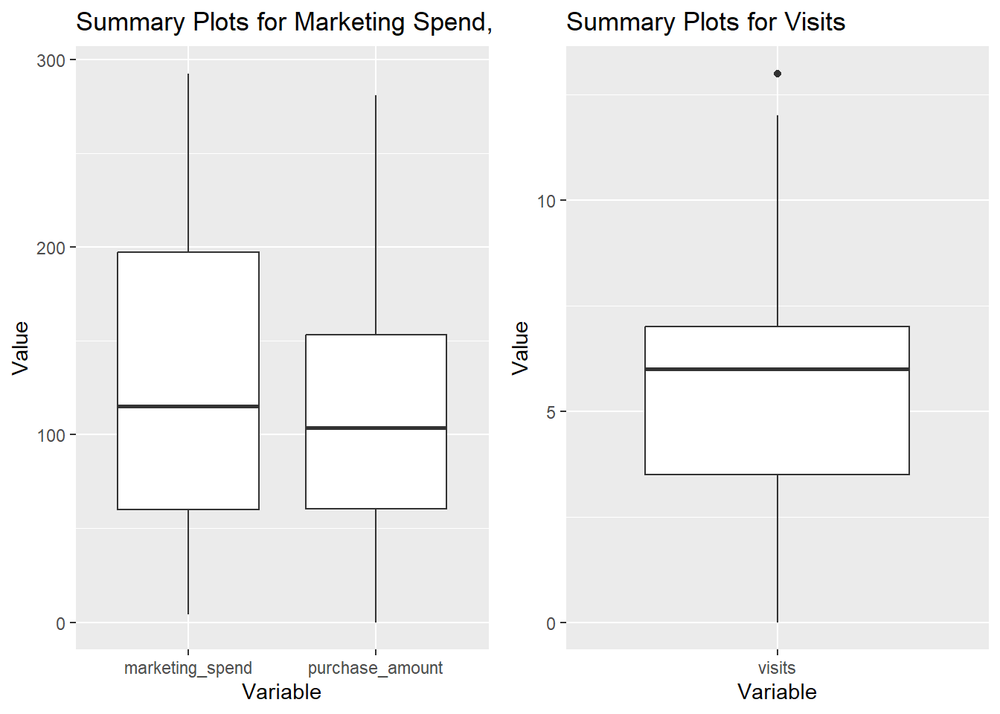
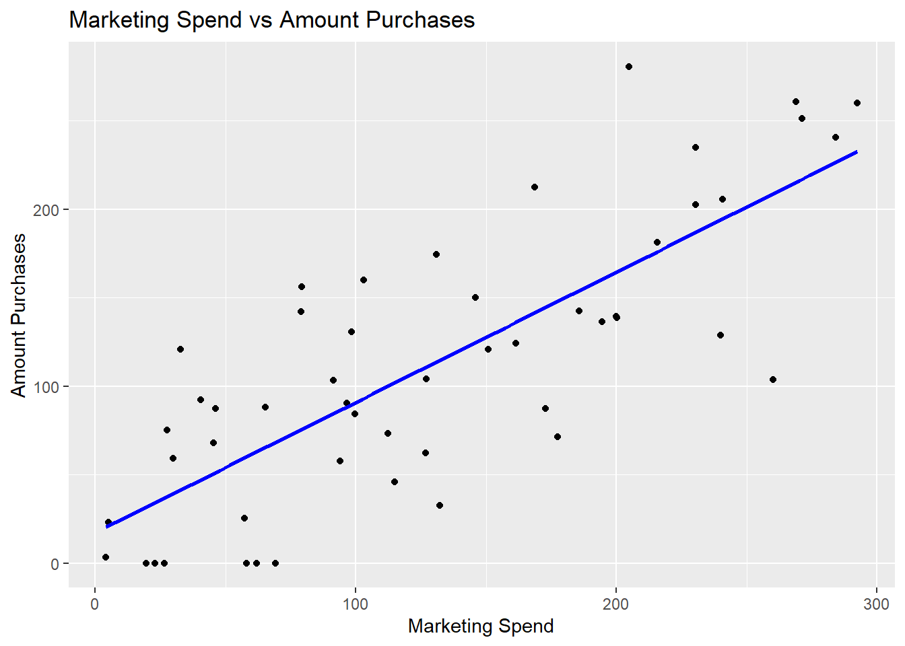
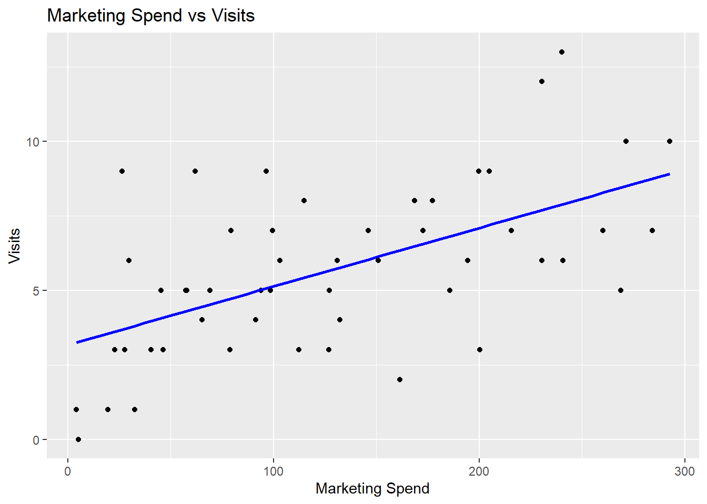
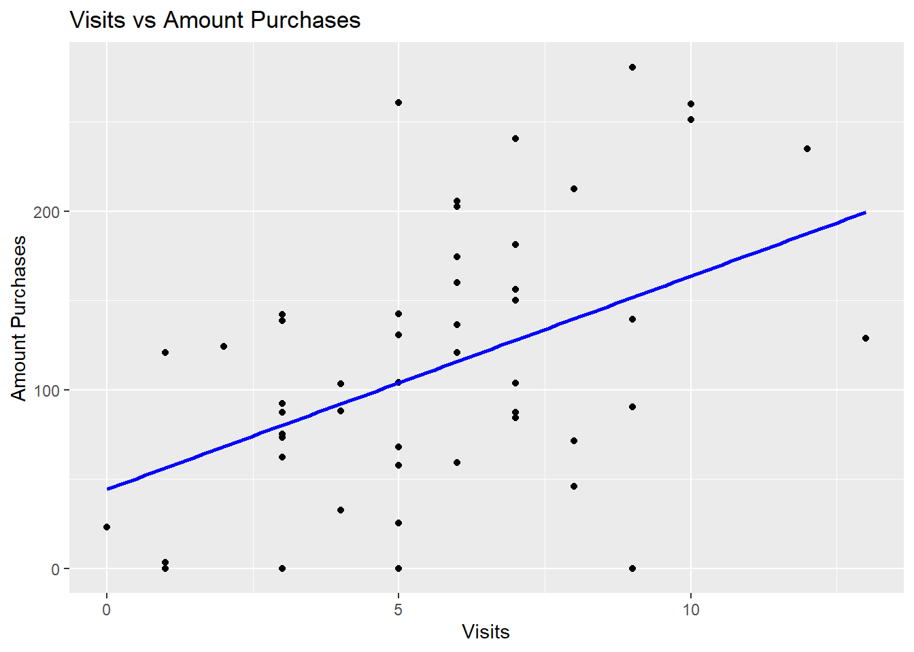

data <- read_csv("data/34667830_Minh Ngo.csv")Assignment 1
Load the data
Introduction section
In the modern business landscape, understanding the impact of marketing expenditure on customer behavior is crucial for optimizing marketing strategies and maximizing return on investment. In this assignment, we will analyze the dataset containing information about the relationship between marketing expenditure and the number of visits, amount of purchases of customers. The dataset includes variables such as signup_date, marketing_spend, visits, and purchase_amount. We will explore the data to understand the distribution of these variables and their relationships.
Research Question section
The main research questions we aim to answer are: 1. What is the relationship between marketing expenditure and the number of visits? 2. What is the relationship between marketing expenditure and the amount of purchases? 3. How do the number of visits and the amount of purchases relate to each other?
Dataset introduction
Dataset was collected from 150 observations, including the following variables:
customer_id: Unique identifier for each customersignup_date: The date when the customer signed upmarketing_spend: The amount of money spent on marketing for each customervisits: The number of visits made by each customerpurchase_amount: The total amount of purchases made by each customersegment: The customer segment (e.g. “Consumer”, “SMB”) to which each customer belongsnotes: Additional notes about each customer (e.g. “contacted”, “returned”)
Dataset Description subsection
Number of rows and columns
dataset_description size columns
1 150 7Variables types
data.frame(type = sapply(data, class)) type
customer_id character
signup_date character
marketing_spend numeric
visits numeric
purchase_amount numeric
segment character
notes characterSummary statistics (table and plots)
# Count NA values
na_count <- sapply(data, function(x) sum(is.na(x)))
data.frame(na_count) na_count
customer_id 0
signup_date 4
marketing_spend 0
visits 0
purchase_amount 18
segment 0
notes 88# Summary table
summary_table <- data |> summary()
summary_table customer_id signup_date marketing_spend visits
Length:150 Length:150 Min. : 1.97 Min. : 0.000
Class :character Class :character 1st Qu.: 75.29 1st Qu.: 3.000
Mode :character Mode :character Median :133.13 Median : 5.000
Mean :142.61 Mean : 5.367
3rd Qu.:217.57 3rd Qu.: 7.000
Max. :298.31 Max. :13.000
purchase_amount segment notes
Min. : 0.00 Length:150 Length:150
1st Qu.: 57.83 Class :character Class :character
Median :120.21 Mode :character Mode :character
Mean :120.94
3rd Qu.:173.24
Max. :316.31
NA's :18 Based on the summary statistics, dataset has some missing values. Ignoring them, we have the average marketing expenditure is around $142.61, with a wide range of values from $1.97 to $298.31. The average number of visits is approximately 5, while the average amount of purchases is around $120.
data_clean <- data |> drop_na()mar_pur_plot <- data_clean |> select(marketing_spend, purchase_amount) |>
pivot_longer(cols = c(marketing_spend, purchase_amount),
names_to = "variable",
values_to = "value") |>
ggplot(aes(x = variable, y = value)) +
geom_boxplot() +
labs(title = "Summary Plots for Marketing Spend, and Purchase Amount",
x = "Variable",
y = "Value")
visit_plot <- data_clean |> select(visits) |>
ggplot(aes(x = "visits", y = visits)) +
geom_boxplot() +
labs(title = "Summary Plots for Visits",
x = "Variable",
y = "Value")
grid.arrange(mar_pur_plot, visit_plot, nrow = 1)
Results section
# Summary plot
mar_pur_plot <- data_clean |>
ggplot(aes(x = marketing_spend, y = purchase_amount)) +
geom_point() +
geom_smooth(method = "lm", se = FALSE, color = "blue") +
labs(title = "Marketing Spend vs Amount Purchases",
x = "Marketing Spend",
y = "Amount Purchases")
mar_vis_plot <- data_clean |>
ggplot(aes(x = marketing_spend, y = visits)) +
geom_point() +
geom_smooth(method = "lm", se = FALSE, color = "blue") +
labs(title = "Marketing Spend vs Visits",
x = "Marketing Spend",
y = "Visits")
pur_vis_plot <- data_clean |>
ggplot(aes(x = visits, y = purchase_amount)) +
geom_point() +
geom_smooth(method = "lm", se = FALSE, color = "blue") +
labs(title = "Visits vs Amount Purchases",
x = "Visits",
y = "Amount Purchases")
mar_pur_plot`geom_smooth()` using formula = 'y ~ x'
mar_vis_plot`geom_smooth()` using formula = 'y ~ x'
pur_vis_plot`geom_smooth()` using formula = 'y ~ x'
From the scatter plots, we can observe that there is a positive relationship between marketing expenditure and the amount of purchases. As marketing expenditure increases, we see an increase in purchase amount, suggesting that higher marketing spend may lead to more customer engagement and sales. However, there is just a weak relationship between marketing expenditure and the number of visits. This indicates that while marketing efforts may drive purchases, they do not strongly increase the frequency of customer visits. And finally, there is a positive relationship between the number of visits and the amount of purchases. It is clear that customers who visit more frequently tend to spend more, which suggests that encouraging repeat visits could be a key strategy for increasing sales.
Conclusion section
In conclusion, our analysis of the dataset reveals that marketing expenditure has a significant positive impact on the amount of purchases, while its effect on the number of visits is relatively weak. Additionally, there is a strong positive relationship between the number of visits and the amount of purchases, indicating that customers who visit more frequently tend to spend more. These findings suggest that while investing in marketing can boost sales, strategies that encourage repeat visits may be more effective in driving long-term customer engagement and increasing purchase amounts.